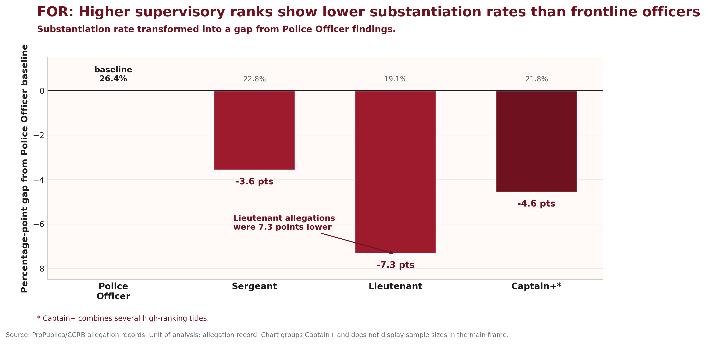
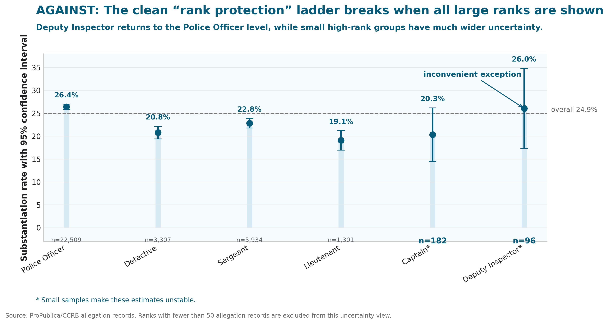

Proposition: The CCRB complaint process appeared to protect higher-ranking NYPD officers from substantiated findings.
FOR the Proposition

Design Decisions and Rationale:
- Transformed raw substantiation rates into a gap from the Police Officer baseline. This makes the comparison easier to read because the viewer immediately sees how much each supervisory group falls below the reference group. The tradeoff is that the baseline quietly becomes the standard of fairness, even though that standard is itself a rhetorical choice.
- Grouped the highest titles into Captain+ and focused on a command-ladder sequence. This produces a clean institutional story about rank, but it also smooths over within-group variation and avoids making the Deputy Inspector exception visually prominent.
- Used a red warning palette and an accusatory title. The color and text make the chart feel like evidence of a systemic problem before the reader studies the exact values. I avoided more inflammatory words like "proof" or "cover-up" because those would overstate what the dataset can support.
- Did not put sample sizes in the main chart. That makes the Captain+ estimate look almost as stable as the Police Officer estimate, even though the sample sizes are very different. I settled on this because it strengthens the persuasive side, while a source note still discloses the transformation.
AGAINST the Proposition

Design Decisions and Rationale:
- Displayed all ranks with at least 50 allegation records and labeled their sample sizes. This directly counters the selective FOR view by making the denominator visible. The chart becomes less dramatic, but more honest about which estimates are based on very different amounts of evidence.
- Added 95% confidence intervals around each rank's substantiation rate. This emphasizes that high-rank estimates are noisier because there are far fewer cases. It does not erase differences across ranks, but it makes the viewer less likely to treat each bar as equally certain.
- Used a zero-based vertical scale and an overall reference line. The scale reduces visual exaggeration, while the reference line gives readers a neutral benchmark. I considered a truncated scale for symmetry with the FOR view, but rejected it because this side is meant to argue through context and caution.
- Chose the title "the clean rank protection ladder breaks" instead of "the system is fair." This is still persuasive language, but it avoids claiming that the complaint system works perfectly. The more limited wording fits the evidence better.
Final Reflection
The easiest part of this project was producing the mechanical summaries: the dataset already includes rank at the time of incident and a board disposition, so calculating substantiation rates by rank is straightforward. The difficult part was deciding what each row should mean. The data contains allegation records, not a perfect census of every complaint experience; a single complaint can create multiple allegation rows, and ProPublica's release focuses on officers still on the force as of June 2020 who had at least one substantiated allegation. Those limitations made it ethically uncomfortable to make a sweeping claim like "the system is corrupt," even though some rank comparisons are rhetorically powerful.
What surprised me most was how easily the same numbers could be made to feel either damning or cautious. When I hid sample sizes, grouped high ranks, and used relative language, the story became: higher-ranking officers are protected. When I showed all ranks, denominators, and uncertainty, the story became: the evidence is too uneven to prove a simple rank-protection pattern. Neither side required fabricating data. The persuasion came from baseline choice, grouping, color, labels, and what context was allowed into the frame.
I now define ethical analysis and visualization as more than avoiding obvious errors. Ethical visualization means making the main transformation choices legible enough that a reader can understand what is being emphasized and what is being pushed aside. I think persuasive choices are acceptable when they organize evidence around a clear argument while preserving enough context for a skeptical reader to evaluate the claim. They become misleading when they hide context that would materially change the interpretation, such as denominators, uncertainty, excluded categories, or important dataset limitations. For that reason, I find the AGAINST visualization more ethically defensible, even though the FOR visualization is more immediately forceful.